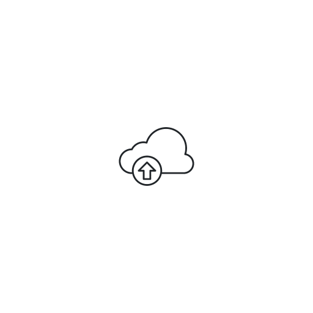
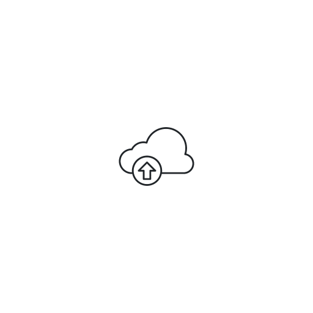

MapartCraft
FAQ | Video tutorial | GitHub | Discord | MapartWall
A Minecraft mapart schematic and map.dat generator, designed to be feasible for both server admins and survival players on servers like 2b2t, running in your browser
Inspired by Redstonehelper's map art program, with the goal to add much-requested features and removing the need to download a program
Feel free to message me on Discord (rebane2001#3716) or Reddit (/u/rebane2001), feature requests and bug reports go on GitHub
Please check the FAQ before asking any questions anywhere!
Inspired by Redstonehelper's map art program, with the goal to add much-requested features and removing the need to download a program
Feel free to message me on Discord (rebane2001#3716) or Reddit (/u/rebane2001), feature requests and bug reports go on GitHub
Please check the FAQ before asking any questions anywhere!
128x128 1920x1080
Settings
Mode:Version:
Map size: x
Crop:
Staircasing:
Better color:
Dithering:
Add blocks under:
Block to add:
&
Block selection


 

preload